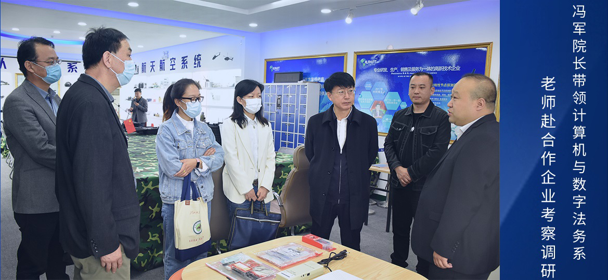

建设成果
计算机系着眼于就业市场拓展，几年来先后与华为/H3C及杭州洪铭、北京用友新道、河北华网智、 北京水晶石等多家企业合作办学，联合培养社会急需的计算机应用领域高技能人才，合作方式采用“校企合作、订单培养 、定向就业”合作办学模式，相继开办了“软件技术（3G软件开发方向）、计算机网络技术（3G数据网络构建方向）、 经济信息管理（管理软件应用工程方向）、计算机信息管理（移动互联网4G-LTE方向）、图形图像制作（超媒体设计方向） -水晶石班”等五个“订单培养专业”。订单培养专业的学生，前两年在学校完成专业知识学习，第三年由企业安排在相应的实训 基地参加三个月的岗前强化实训，之后安排在相应的IT企业实施6-9个月的带薪顶岗实习直至就业， 从而帮助每一名订单班毕业生，成功实现“毕业即就业”的高质量对口就业梦想。
2022年，共有5个招生专业，分别是：数字媒体技术、软件技术、人工智能技术应用、安全防范技术和法律事务 （智慧法治方向）。其中，数字媒体技术专业被确定为“高等职业教育创新发展行动计划”国家骨干专业；软件技术专业为院级立项 建设重点专业； web前端开发、大数据分析与应用、计算机应用视觉、数字创意建模、工业APP等5个项目被列入教育部“1+X”证书 制度试点；与深圳创想三维科技有限公司合作，在学院建成“创想3D打印”专业社团， 2020年荣获第一届“千团行动十佳社团”称号。2016年、2017年、2018年连续三年获得学院先进工作单位称号。